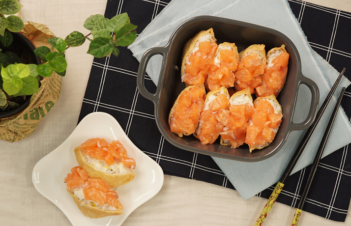
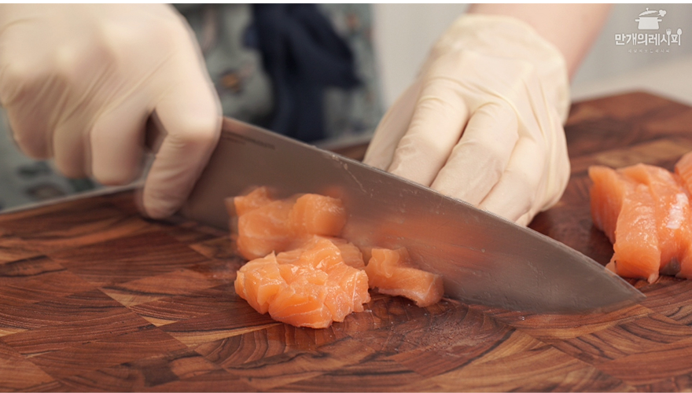
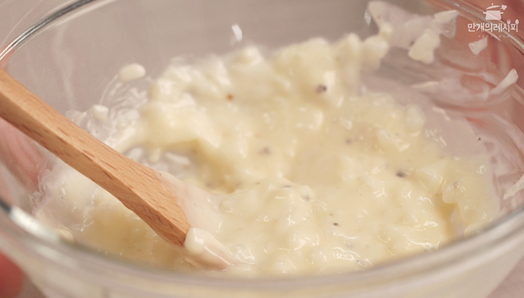
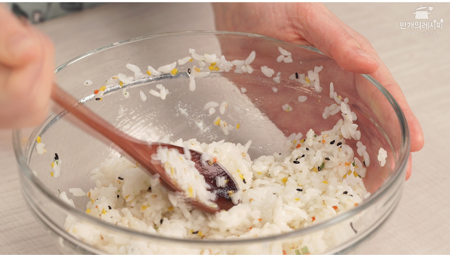
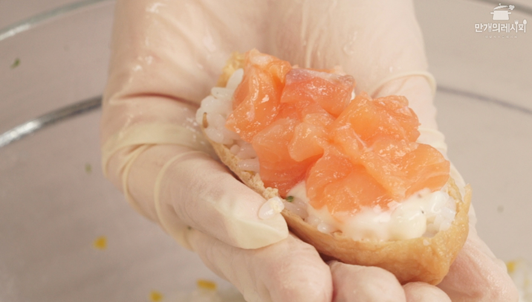

연어유부초밥
조리시간 15분 | 난이도 ★★☆☆☆
재료

-
시판 유부초밥
1세트
-
연어
150g
-
양파
1/4개
-
마요네즈
2스푼
-
설탕
0.5스푼
-
밥
2공기
타임라인
- 0:00 인트로
- 0:04 연어 손질
- 0:10 소스 만들기
- 0:26 밥 비비기
- 0:34 유부 속 넣기
조리순서
1 연어는 작게 썬다

2 양파 소스를 만든다

3 밥에 *배합초를 넣고 버무린다
*배합초

4 유부의 물기를 짜고 밥 > 소스 >
연어를 올려 완성한다
